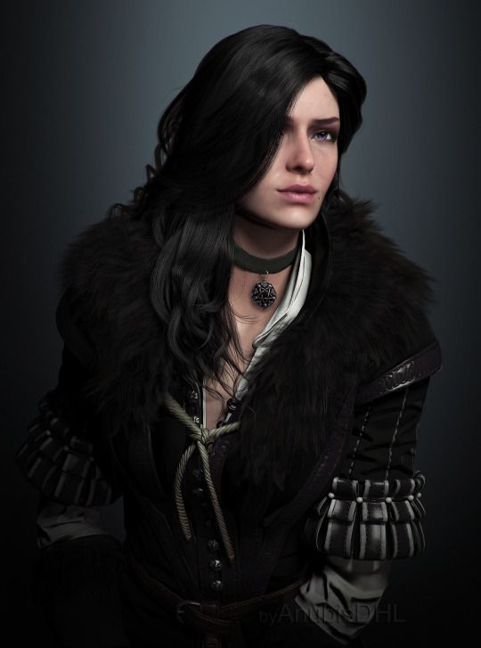

THE WITCHER 3, MIS DOS PERSONAJES FAVORITOS
 Hacía unos buenos veinte años que el brujo conocía a la hechicera de cabellos negros como ala de cuervo. Su amistad y los sentimientos entre ambos habían nacido de una aventura en común en la que se había visto implicado un djinn que concedió un deseo a Geralt, deseo que entrelazó sus destinos indisolublemente. No obstante, desde entonces su relación había sido bastante tormentosa, rica en altibajos, crisis y rupturas. El amor de Geralt y Yennefer es la prueba irrefutable de la afirmación de que los contrarios se atraen. Unos cuantos años atrás, tras la separación llena de aventuras para ambos, Geralt y Yennefer habían reanudado su relación. Su momento de reposo se vio interrumpido por loa cacería salvaje, que se llevó cautiva a Yennefer. El brujo partió de inmediato a salvarla, pero perdió la memoria al hacerlo. Cuando la recobró finalmente, reemprendió en el acto la misión de encontrar a su amada hechicera. Después de dos años, el reencuentro de Geralt con Yennefer fue bastante distinto de lo que este había imaginado. No solo la hechicera estaba sana y salva, sino que además se había procurado la ayuda de un aliado inesperado y poderoso: el Imperio Nilfgaardiano. Un aire cargado de hostilidad reprimida reinó durante el tiempo que Geralt pasó con Yennefer en Skellige. Más de una vez la hechicera expresó su descontento con aspereza y no ahorró comentarios incisivos, como durante los mejores años de su relación. Al final, no obstante, la paciencia del brujo se vio recompensada y su expedición para recuperar la máscara de Uróboros volvió a unir a los antiguos amantes. La brecha que se había abierto entre ellos durante su separación parecía ahora mucho más estrecha. Para conseguir la información que necesitaban, Yennefer no dudó en recurrir a la nigromancia y destruyó el jardín de la diosa Freya en el proceso. Si la orgullosa hechicera se sintió algo culpable de lo que hizo, no dio muestras de ello, como era habitual. La idea de perseguir a otro djinn juntos no entusiasmó a Geralt en un principio, pero Yennefer tenía una razón muy válida para querer eso. Si conseguían que el djinn revirtiera el deseo que la ataba al brujo, al fin podría saber si lo que sentían era amor de verdad o mera magia. El djinn le concedió a Yennefer su deseo y cortó el hilo del destino que la unía a Geralt. Por suerte, su amor continuó... sin necesidad de ayudas sobrenaturales. Aunque el difícil carácter de la hechicera le había hecho la vida imposible a todo el mundo en Kaer Morhen, al final fue su terca determinación la que consiguió acabar con el encantamiento de Uma y la maldición de Avallac'h. Yennefer siempre había tenido claro que ciertos fines justificaban medios que, de lo contrario, serían desagradables. Cuando estuvo claro que para rescatar a Ciri se precisaría la ayuda de Philippa Eilhart y de las demás hechiceras de la vilipendiada Logia, dejó de lado sus rencores y convenció a Emhyr de que las amnistiara. La dama de Vengerberg era famosa por su belleza, a pesar de que durante los sucesos de La torre de la golondrina tenía 94 años.[3] Se sabe que en realidad su belleza era fruto de una serie de encantamientos; de hecho Geralt se dio cuenta de que antes era jorobada. Aunque tenía más de 90 años, para un ojo mortal aparentaba unos 25. Era una de las hechiceras más hermosas o al menos quien la conoció lo afirma. Yennefer era de estatura baja y constitución delgada pero tenía más fuerza de lo que parece, pues podía empuñar un arma fácilmente.
PLATAFORMAS EN LAS QUE ESTÁ DISPONIBLE
PS4

XBOX ONE

PC